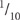
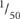
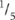

Ion chromatography permits quantitative determination of common anions (F–, Cl–, NO2–, Br–, NO3–, HPO42–, SO42–, ClO4–) in known aqueous matrices within the mg/L concentration range or lower. The technology can effectively distinguish the halides (F–, Cl–, Br–) and eliminates the need to use hazardous reagents during analysis (APHA 1998). The technique is not commonly recommended for F– in unknown matrices for reasons including possible interference from simple organic acids (formic, carbonic, etc.) that elute close to F–. There are ‘work-arounds’ using special columns with dilute eluent or gradient elution with NaOH. Ion chromatography analyses can be completed sequentially within 30 min or less using a few mL of extract. Alternative IC technology with electronic suppression of eluent conductivity and conductivity detection is also available (see Method 5A3b). Analysts should note that Cl– and NO2– (if present) elute close together and therefore are potential interferences for each other (ASTM 2000). Also, if a particular anion is present at a high concentration, it may interfere by causing a very large peak on the chromatogram, causing other peaks to be masked. Such interferences are often avoided by dilution and/or via the use of specialised columns.
Determination of Cl– concentration, in conjunction with the other anions mentioned, involves injecting a finely filtered aliquot (≤0.45 μm, with <0.20 μm membrane filter preferred) of the 1:5 soil/water extract into an IC appropriately configured. In the system described, based on O’Dell et al. (1984), the sample is pumped through three different ion exchange columns and then into a conductivity detector.
The first column (pre-column) acts as a guard, protecting the second or separator column from fouling by particulates including OM. The separator column typically contains a styrene divinylbenzene-based anion exchange resin of low capacity, designed to separate anions based on their affinity for exchange sites on the resin. The third is a suppressor column packed with a high-capacity cation exchanger capable of converting the eluent and separated anions to their corresponding acids. Finally, the separated anions, in their acid form, are determined quantitatively by their respective retention times, following detection with an EC cell and comparison with known standards (APHA 1998).
This chemically-suppressed, IC system has United States Environmental Protection Agency approval for the analysis of Cl–, NO3– and SO42– in drinking water. The method is also suited to surface waters, and mixed domestic and industrial wastewaters (O’Dell et al. 1984). The approximate detection limit is 0.1 mg Cl/L, which equates to 0.5 mg Cl/kg of air-dry soil. Refer to Australian Standard AS 3741 (Anon 1990), Section 4110 C of APHA (1998) and Method D 4327–97 of ASTM (2000) for further details on analysis by IC.
Reagent Water
Deionised or distilled water, analytically free of the anions of interest and containing no particles >0.20 μm.
Eluent Solution
Dissolve 0.2520 g sodium bicarbonate (NaHCO3) in reagent water. Separately dissolve 0.2544 g sodium carbonate (Na2CO3) in reagent water then combine and make to 1.0 L. This solution contains 0.003 M NaHCO3 and 0.0024 M Na2CO3. As the eluent solution acts as a growth media for micro-organisms, it should not be kept for longer than one month. Changing the eluent solution may also change the order or time of elution of the anions of interest.
Suppressor Regenerating Solution (≈0.0125 M H2S4)
Dilute 0.7 mL sulfuric acid (H2SO4; 18 M) in reagent water and make to 1.0 L.
Chloride Primary Standard
1 L contains 1000 mg of Cl–.
Dissolve 1.6485 g sodium chloride (NaCl; previously dried at 110°C for 2 h) in reagent water and make to 1.0 L in a volumetric flask. This solution is stable for at least one month when stored at ≈4°C.
Chloride Solution for Retention Time
1 L contains 4 mg of Cl–.
Dilute 4.0 mL Cl Primary Standard with reagent water and make to 1.0 L in a volumetric flask. The concentration can be increased to suit the particular equipment and column/s.
Anion Calibration Solutions
Prepare a reagent water blank and at least three different solutions containing known concentrations of Cl–, plus other anions to be tested. Anions in which there is no interest may be omitted. These solutions should be prepared fresh daily if they contain NO2–, NO3– and/or HPO42–; otherwise prepare weekly.
High-range Calibration Solution
Dilute volumes of Anion Primary Standards as specified in Table 5.2 with reagent water and make to 1.0 L in a volumetric flask.
Intermediate-range Calibration Solution
Dilute 10.0 mL freshly prepared High-range Calibration Solution with reagent water and make to 100 mL in a volumetric flask. The anion concentrations in this calibration solution are  of those in the high-range calibration solution.
Low-range Calibration Solution
Dilute 20.0 mL freshly prepared Intermediate-range Calibration Solution with reagent water and make to 100 mL in a volumetric flask. The anion concentrations in this solution are  those in the High-range Calibration Solution, equivalent to  those in the Intermediate-range Calibration Solution.
Ion Chromatograph
Select/set up a complete system including syringes, analytical columns, compressed air, conductivity detector, data recording and peak integrating system/s (see Figure 5.5).
Anion Guard Column
4 × 50 mm, Dionex P/N 030825 or equivalent.
Anion Separator Column
4 × 250 mm, Dionex P/N 030827 or equivalent.
Anion Suppressor Column
Fiber, Dionex P/N 35350 or equivalent. When the suppressor column becomes or approaches exhaustion, regenerate with suppressor regenerating solution in accord with manufacturer’s instructions.
Conductivity Cell
≈6 μL volume; Dionex or equivalent.
Prepare 1:5 soil/water suspensions as described in Method 3A1. Filter a suitable aliquot for same-day analysis using at least a 0.45 μm pre-washed membrane and preferably one of 0.20 μm.
Figure 5.5. Schematic of a chemically suppressed Ion Chromatographic System.
Set up the IC in accord with manufacturer’s instructions. Specifications typically change over time. Equilibrate by pumping Eluent Solution (usually around 2 mL/min) for ≈15–20 min through all three columns. Allow sufficient time for the system to stabilise, or until a stable baseline is obtained. Adjust the conductivity detector during this period (usually 10–30 μS). Also zero-out eluent conductivity with the detector offset, and with the fiber or membrane suppressor, adjust the regeneration flow rate, usually to 2.5–3 mL/min.
Determine the retention time for each anion by injecting a 2.0 to 3.0 mL aliquot of the Cl– Solution for Retention Time (4.0 mg Cl/L). Use a syringe and inject into the sample entry port. If other anions are to be determined, their retention times should also be calibrated at this stage, with solutions containing only the anion of interest. Note the time required for the peak for each anion to appear on the chromatogram and record in minutes. These times will vary from one column to another, and are influenced by eluent flow rates and temperature. With the Eluent Solution described, the order of anions is always F–, Cl–, NO2–, NO3–, HPO42– and SO42–. Retention times vary with instrument settings and solution concentrations. An example is around 1, 3, 4.5, 9, 11 and 21 min, respectively. Bromine, if included, would appear between the NO2– and NO3– peaks.
Table 5.2. Solutions and dilutions for the high-range calibration solution containing anions of analytical interest.
Anion Primary Standard |
Volume of Anion Primary Standard/L (mL) |
Anion concentration of element (mg/L) |
|
Anion |
Method code for 1:5 soil water extract |
|
|
Cl– |
5A3a and 5A3b |
10.0 |
10 |
F– |
Not applicable |
10.0 |
10 |
NO2-N |
Not applicable |
10.0 |
10 |
NO3-N |
7B2 |
30.0 |
30 |
PO4-P |
Not applicable |
20.0 |
20 |
SO4-S |
Not applicable |
20.0 |
20 |
Analyse the Reagent Water blank and the High-, Intermediate- and Low-range Calibration Solutions by injecting 2–3 mL aliquots as previously described. Prepare calibration curves for Cl– (and all other anions of interest) by plotting peak height (usually μS) or peak area – from the chromatogram – against the concentrations of the anion calibration solutions. Note that a single standard calibration is possible if linearity can be established for a known detector setting. In such cases, determine the calibration factor F from peak height or area and the retention time. A calibration curve is preferred, however, for better precision and bias when the relationship is non-linear such as with HPO42–(APHA 1998).
Next, inject a known volume of the filtered soil/water extract (same volume as used for the calibration solution/s). Record the ion chromatogram, evaluate peak height or peak area as required for comparison with the relevant calibration curve, and determine the anion concentration (Cl– in this case), initially as mg anion/L. Multiply by 5 to convert to mg anion species/kg air-dry soil. [Another sample can be injected after the last peak (SO42–) has appeared and the conductivity signal has returned to base line.] To avoid interference when Cl– or other anions present at high concentrations overlap neighbouring species, minimise this by sample dilution with reagent water, and adjust for the dilution used.
When the calibration is known to be linear, the following equation can be used to calculate the anion concentration as follows:
5 mg anion/kg air dry soil = [H × F × D × 5]
where H = peak height or area;
F = response factor or concentration of standard/height (or area) of standard;
D = dilution factor for those samples requiring dilution, and
5 accounts for the 1:5 soil/solution ratio.
Report water-soluble Cl– (mg Cl/kg) on an air-dry basis.